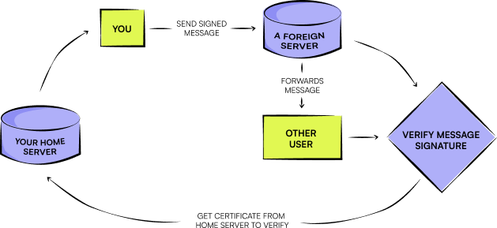

What is
all about?
What polyproto is all about?

polyproto is all about decentralized, federated data exchange using tried and true concepts. Designed to be flexible, polyproto can fit almost any usecase. The best part? The user remains in control. No more losing friends and followers if your old homeserver sunsets. Feel free to migrate to another homeserver at any time, even if your old homeserver has shut down ages ago.
Join the network of creators
Contributions are always welcome!
Develop for or with polyproto.
Not just different. Better!
Your digital home, wherever you go.
Switch home servers even if your home server is offline, while making sure that your data stays in your control.
Tamper-Proof Messages
Produces tamper-resistant data/messages through the use of signatures. Trust, that what you see has not been altered along the way.